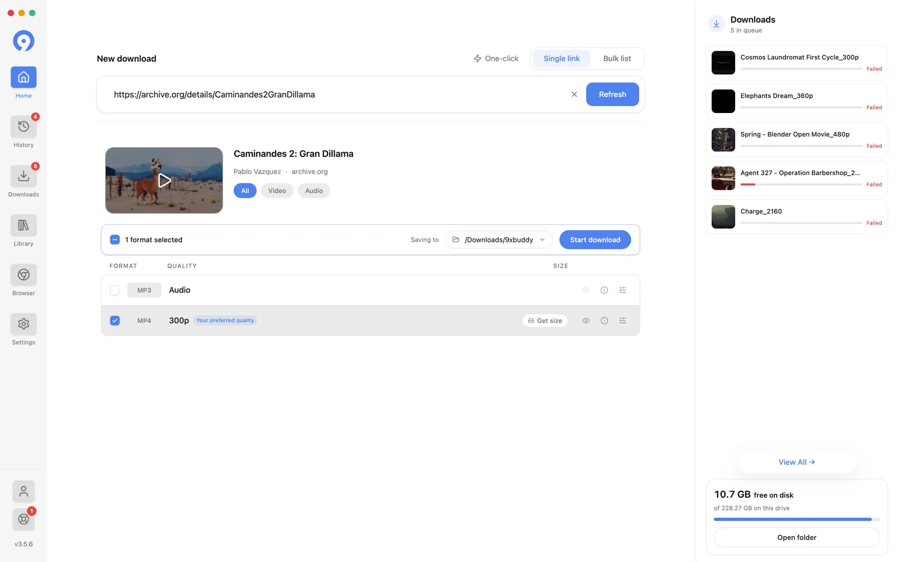

把 9xbuddy 串进每周素材采集流水线：从社媒刷到剪辑台，一条链少四次手动复制
每周从抖音、B 站、X、Instagram 攒素材做短剪，以前是手机存一遍、桌面拷一遍、找文件又一遍。现在用 9xbuddy 当中台，把"刷到 → 下载 → 整理 → 喂剪辑软件"四步拧成一条链。
我每周要干的那件事
每个周末我得攒一批短视频素材：从抖音、B 站、X、Instagram 各挑几条最新的行业号内容，存下来、按主题分类、再喂给剪映做一条两分钟的盘点片。以前这条链路是这样走的——
旧流程，走一遍就要崩一次： 手机刷到好内容 → 社媒内置"保存视频"存到系统相册 → 连数据线把相册里那堆视频拖到桌面 → 翻一遍找真正要的那几条（混在自拍、会议录屏、朋友圈小视频里）→ 手动重命名加标签 → 拖进剪映素材库。这一套下来，光"从刷到内容到它躺在剪辑台"就要半小时，其中至少四次手动复制、两次打开文件管理器找东西、无数次纠结"这条存没存过"。
问题本质不是某一步慢，而是四个平台各用各的下载方式——抖音自带的保存有时带水印，B 站客户端不让下原画质，X 的 GIF 得另存成 MP4，Instagram Reels 要么用网页版要么用截图。每个平台我都得单独找一次"去哪了"、单独重命名、单独确认画质。
把 9xbuddy 插进流程的哪一环
我现在把 9xbuddy官网 当成整个下载环节的唯一入口，相当于在"刷到内容"和"文件躺在我的素材库"之间插了一层统一中间件。流程变成这样：
新流程： 手机刷到好内容 → 点分享、选 9xbuddy（系统分享菜单里就有）→ 它解析完吐一个格式列表 → 勾好格式、选好下载文件夹（提前在确认栏设了专门的"素材采集"文件夹）→ 按开始，进后台队列 → 下次打开桌面端，同一个文件夹里自动同步好了 → 直接喂剪映。
关键的衔接点：手机端负责"捕获"，桌面端负责"批量处理"。装了 9xbuddy下载 的安卓 App 之后，系统分享菜单是桌面版和浏览器扩展都替代不了的——在任何 App 里刷到东西，点分享就能拉它进解析，这是整个链路的入口。桌面版则负责队列管理、批量上限更高、剪贴板监听，适合我把周末攒的一批链接一次性丢进去跑。两端共享同一个 UID 账号，Pro 授权跟着账号走，不用两边各买一次。
整个下载的"确认"被它压成了一个统一的确认栏——我不用跳页、不用弹窗，在列表上方直接看到已勾数量、下载到哪个文件夹、一个"开始"按钮。多条格式可以一起勾，一次提交，队列里各自独立暂停、独立恢复、独立重试，互不牵连。

最容易断链的两个环节
这条链跑了两个月，有两个地方我一开始没摸透，踩了几次坑——说出来省你绕路。
第一个坑：两个"删除"完全不是一回事。收藏库卡片的菜单里有个"移到回收站"，还有个"从收藏库移除"，我当初手抖点错了前者，到文件管理器里找不到文件，以为下载丢了，又用"再次提取"重新下了一遍，浪费了半小时。后来去 9xbuddy文档 翻了一下才搞清楚：移到回收站 = 真把磁盘上的文件删了（走系统回收站还能捞，但麻烦）；从收藏库移除 = 只是库的清单里不再显示它，文件还在下载文件夹里好好躺着。我现在每次整理素材只用后者——想让库清爽但留住文件给剪映用，就点这个。
第二个坑：格式勾少了就得回来补。B 站的视频和字幕是两个独立格式，抖音有时同一条视频有 720P 和 1080P 两个码率，X 的 GIF 和 MP4 也分开列。一开始我只勾视频、没勾字幕，剪辑时才发现需要台词，不得不再打开 9xbuddy、点"再次提取"、等它重新解析、再勾字幕、再等下载。后来养成一个习惯：勾完视频格式，扫一眼列表里有没有字幕、有没有音频轨道，顺手一起勾——多勾几行不费时间，回来补的代价是重新解析一次。
效果与边界
量化一下这条链带来的变化：
- 以前每条素材的"刷到 → 进素材库"平均耗时 3 分钟，现在 40 秒——少了两次手动复制、一次打开文件管理器找东西、一次重命名确认；
- 周末攒 15 条素材，以前半小时起步，现在 10 分钟以内；
- 不用担心存到系统相册被别的文件淹没——直接进专门的"素材采集"文件夹，文件名自动带来源平台和画质后缀，剪映扫一下就全识别了。
但这条链也有不划算的场景：
- 偶尔用一次不值得装。如果我半年才采集一次，9xbuddy 的安卓 App 安装包 41MB、还要一个 UID 账号，不如直接用它的网页版粘贴链接解析——免安装免账号，就是能力上没有后台队列和分享菜单，纯被动；
- 商店版和直装版不一样。受 Google Play 政策约束，商店版的安卓 App 不支持下载 YouTube 内容，桌面版和非商店渠道的直装版没有这个限制。我当初就是因为商店版找不到 YouTube 的下载入口，转而用了直装版——如果你也有这个需求，注意选对渠道；
- Firefox 和 Chrome 扩展能力不同。Firefox 扩展版支持 YouTube，Chrome 和 Edge 的商店版因商店政策不支持。我主要用 Chrome，所以桌面端直接装独立客户端不走扩展。
这一套串下来，9xbuddy 解决的是"多平台下载方式不统一"这个核心痛点——它不生产内容，但它把"刷到好东西到真的落盘在正确位置"这段最容易散架的链路攥在了一起。我的剪辑时间还是那么多，但素材准备那半小时的焦虑，确实没了。
这套资料我在三个仓库都同步了一份：GitHub 适合主分支翻阅，Gitee 和 GitCode 走国内线路访问更顺畅，遇到 GitHub 抽风时可以直接切过去查。各仓库的目录结构完全一致，按软件分类挂着完整的文档与下载引导。